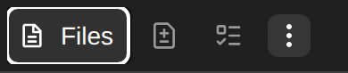
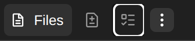
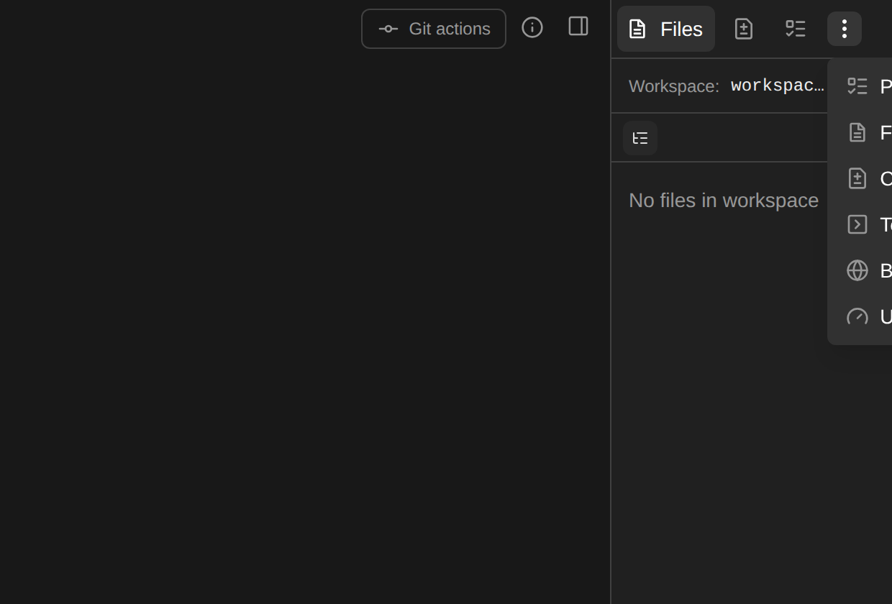
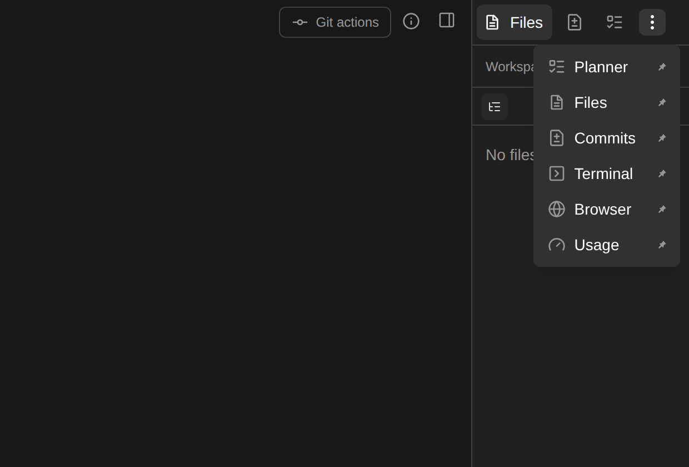

Review doc for OpenHands/OpenHands#17268 — conversation drawer tabs need accessible semantics and collision-aware overflow.
base cf1cc69f · head 5b85f7c2 · 10 files · +444 / −53
src/components/features/conversation/conversation-tabs/) plus two
new translation keys. Nothing in the tab store, the pin/unpin preferences,
or the responsive overflow measurement moves — the strip keeps the exact
same DOM shape and click behaviour, and gains ARIA attributes, a roving
tabindex, and a viewport clamp on the portaled menu. The one behavioural
change a mouse user can notice is the overflow menu no longer running off
the right edge of the viewport.
Captured from a real Chromium session against npm run dev:mock,
on this branch and on its merge-base, same viewport (1280×800) and same
drawer width. ariaSnapshot() is Playwright's view of the
browser's accessibility tree — not our own assertion of it.
- button "Files": - img - text: Files - button: - img - button - button "More options": - img
No tablist, no tabs, no selected state. Every tab except the open one
hides its label, so it reaches assistive tech as an unnamed
button. The overflow trigger is "More options".
- tablist "Conversation panels":
- tab "Files" [selected]:
- img
- text: Files
- tab "Commits":
- img
- tab "Planner"
- tab "Terminal"
- tab "Browser"
- tab "Usage"
- button "Customize tabs":
- img
Every control is a named tab inside a named
tablist, with the open one marked selected.

document.activeElement →
conversation-tab-files, aria-label: null.
Arrow keys do nothing; every tab is its own Tab stop.

document.activeElement →
conversation-tab-planner,
aria-label: "Planner". Files is still the selected tab —
activation is manual (Enter/Space), so scanning
the strip does not thrash the drawer.
The menu is portaled to document.body with
position: fixed. It was anchored with
left: rect.left and nothing else, so wherever the trigger sat
near the right edge — an embedded canvas, or just a narrow drawer — the
labels and the pin controls fell outside the viewport with no way to reach
them.

x = 1234.6 · menu
x = 1234.6, w = 132.2 · viewport 1280 →
87px clipped. Labels read "P / F / C / T / B / U";
the pin toggles are unreachable.

x = 1139.8, w = 132.2 → right edge
1272 · 0px clipped. Full labels and the
pin toggles are visible.
const gap = 8;
setPortalStyle({
position: "fixed",
zIndex: 9999,
top: rect.bottom + gap,
left: rect.left,
});
const menuRect = ref.current?.getBoundingClientRect();
const overflowsBelow =
rect.bottom + MENU_GAP_PX + (menuRect?.height ?? 0) >
window.innerHeight;
const rightmostLeft =
window.innerWidth - (menuRect?.width ?? 0)
- MENU_VIEWPORT_MARGIN_PX;
setPortalStyle({
position: "fixed",
zIndex: 9999,
...(overflowsBelow
? { bottom: window.innerHeight - rect.top + MENU_GAP_PX }
: { top: rect.bottom + MENU_GAP_PX }),
left: Math.max(
MENU_VIEWPORT_MARGIN_PX,
Math.min(rect.left, rightmostLeft),
),
});
The menu's own box is only measurable once it has painted, so the first
pass falls back to the trigger and a
requestAnimationFrame re-runs with real dimensions — the same
two-pass shape already used by the automations kebab menu
(src/components/features/automations/kebab-menu.tsx, PR #16926),
which this now matches, plus the horizontal clamp.
ConversationTabNav gains three optional props. All are
additive; the measurement clones in the offscreen
aria-hidden row pass none of them and stay inert.
type ConversationTabNavProps = {
tabValue: string;
icon: ComponentType<{ className: string }>;
onClick(): void;
isActive?: boolean;
label?: string;
className?: string;
measureOnly?: boolean;
suppressLayoutAnimation?: boolean;
};
type ConversationTabNavProps = {
tabValue: string;
icon: ComponentType<{ className: string }>;
onClick(): void;
isActive?: boolean;
label?: string;
className?: string;
measureOnly?: boolean;
suppressLayoutAnimation?: boolean;
tabIndex?: number;
onKeyDown?(event: KeyboardEvent<HTMLButtonElement>): void;
buttonRef?: Ref<HTMLButtonElement>;
};
conversation-tab-ids.tsexport const CONVERSATION_TAB_PANEL_ID = "conversation-tab-panel";
export const conversationTabId = (tabValue: string) =>
`conversation-tab-${tabValue}`;
Both the strip and the panel need the same two identifiers, and the tab's
DOM id is the string the tests already address it by. The desktop drawer
and the mobile /panel route each render one strip and one
panel and never mount together, so a constant panel id is unambiguous.
| File | What changed | |
|---|---|---|
| conversation-tabs/conversation-tab-ids.ts | added | The panel id and the tab-id helper shared by the strip and the panel. |
| conversation-tabs/conversation-tab-nav.tsx | changed |
Real tabs get role="tab", aria-selected,
id, aria-controls, an explicit
aria-label, and the roving tabIndex /
onKeyDown / ref. Measurement clones get
tabIndex=-1 and no role, so the offscreen
aria-hidden row holds no focusable elements.
|
| conversation-tabs/conversation-tabs.tsx | changed |
The inline row becomes the tablist (dropped when a narrow
drawer pushes every tab into the menu — a tablist owning no tabs is
not a tablist). Adds the roving-tabindex state and the
←/→/Home/End handler, and renames the overflow trigger.
|
| conversation-tabs/conversation-tabs-context-menu.tsx | changed | Viewport-aware portal placement (clamp + flip), see §2. |
| conversation-tab-content/tab-container.tsx | changed |
Becomes the role="tabpanel" with the shared id and an
aria-labelledby pointing at the open tab.
|
| conversation-tab-content/conversation-tab-content.tsx | mechanical | Passes labelledBy={conversationTabId(selectedTab)}. |
| src/i18n/translation.json | changed |
CONVERSATION$TABS_LABEL ("Conversation panels") and
CONVERSATION$CUSTOMIZE_TABS ("Customize tabs"), both with
all 15 locales.
|
| __tests__/…/conversation-tabs.test.tsx | changed |
Six cases: tablist + aria-selected +
aria-controls; icon-only tabs are named; the open tab
holds the only tab stop; arrows move focus without changing the open
tab; Enter activates; the trigger's name.
|
| __tests__/…/conversation-tabs-context-menu.test.tsx | changed | Three placement cases against stubbed trigger/menu rects: anchors below-left when it fits, clamps at the right edge, flips above at the bottom edge. |
| __tests__/…/conversation-tab-content.test.tsx | changed | The content area is the tabpanel labelled by the open tab. |
tabIndex={0} on the panel. APG only asks
for it when the panel has no focusable content; these panels host a file
tree, a terminal and a browser view, and adding a focus stop over the
whole drawer risked changing terminal focus handling for no gain.
aria-expanded on the overflow trigger.
That means touching the shared EllipsisButton used by four
other surfaces; the issue asks for the trigger's name, so that is
what changed here.
This page is a review aid under .pr/ and is removed before
merge by .github/workflows/pr-artifacts.yml.